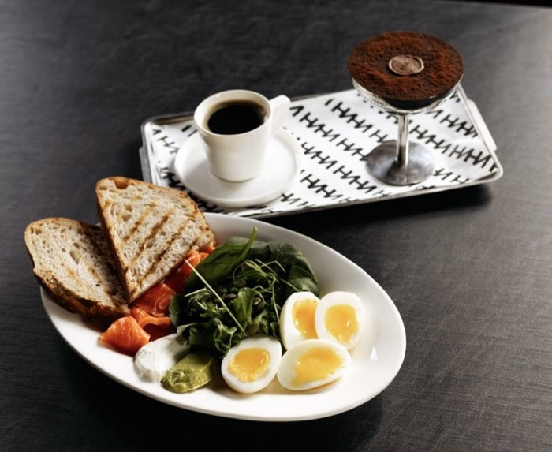

«НИНИ „Фирменный“»
910 ₽420 г
Фирменный завтрак-конструктор: в основе два мягких яйца, лосось, индейка или курица на выбор, микс салата и свежий огурец. Дополняем хрустящим тартином из ремесленного хлеба на закваске и фирменными намазками. В завтрак входит десерт без сахара, а также напиток на выбор.
Состав
Яйцо, белок на выбор, микс салата / киноа, гуакамоле, творожный мусс, хумус, огурцы, смесь семян, масло оливковое, хлеб.
на порцию 443 / 25,2 / 26,5 / 26,9
Аллергены Яйца, глютен, молоко, рыба, ракообразные. Возможны следы орехов.